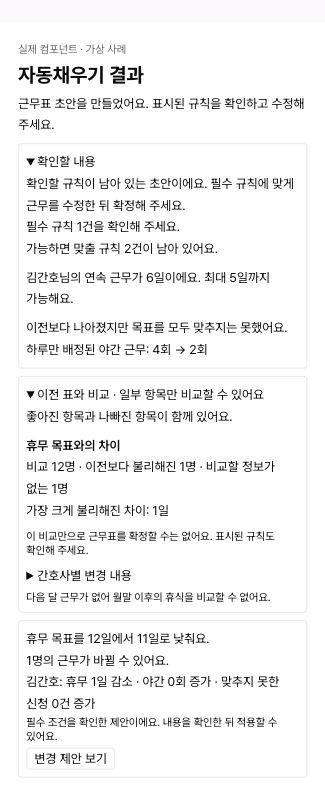

2026-10-11 · 자동채우기, 자연어 수정, 실패·복구, 결과 확인
재현 가능한 문제와 실제 행동이 어긋난 안내를 중심으로 개선했습니다. 모델·알고리즘·DB는 변경하지 않았습니다. 운영 배포 여부와 로컬 검증을 구분합니다.
| 상황 | 기존 문제 | 변경 후 |
|---|---|---|
| 응답이 끊긴 뒤 다시 확인 | 실행 중 상태를 복구한 후 완료되어도 대기 기록이 남아 새 요청이 막힘 | 원래 요청 키로 같은 작업만 확인. 해당 작업의 성공·실패가 확인되면 대기 기록 해제 |
| 아직 계산 중인 요청 복구 | 복구 완료로 안내해 다음 행동을 혼동 | 계산 중·결과 미확인·결과 확인을 구분. 조회에서 완료되면 안내도 갱신 |
| 500자 초과·오래된 요청·미확인 실행 | 구체적 안내가 일반 재시도 메시지로 바뀜 | 로컬 오류 사유를 별도로 전달해 실제 해결 방법 표시. 외부 예외는 숨김 |
| 자동채우기 검토 초안 | 직접 작성에서는 수정 가능한 결과가 대화에서는 실패로 처리됨 | GENERATE의 명시된 검토 초안만 편집 가능한 결과로 보관. 초안 확인 필요 표시 |
| 초안 안전 조건 | 승인 결과만 허용해 초안 활용 불가 | 결과 검증·빈칸 없음·고정/범위/수정 시점 보호를 통과해야 반영. ADJUST 승인 조건 유지 |
| 보정된 정상 결과 | REPAIRED도 무조건 실패 | 승인 가능하고 검토 불필요한 ACCEPTED/REPAIRED를 동일하게 처리 |
| 결과 상세 | 목표 상태 코드 노출, 규칙·요청별 상세 부족 | 목표 달성 여부, 필수/권장 규칙 수, 실제 위반 설명, 남은 요청을 표시 |
| 이전 표와 품질 비교 | 최대 손해 6처럼 단위 없고 원인 코드 노출 | 일·회·시간·칸·%·%p 표기, 비교 불가 사유를 설명. 서로 다른 지표의 합계 손해는 표시하지 않음 |
| 실패 대안 | 객체 문자열·NORMAL/LOW 등 내부 값 노출 | 휴무 목표 변경·선호 요청 제외·우선순위 변경을 두 확인 화면에서 같은 문장으로 설명 |
| 만료된 제안 | 잘못된 만료 시각을 파싱하지 못하면 선택 가능 | 유효한 미래 시각·현재 조건·검증 완료·적용 가능이 모두 충족되어야 선택 |
| 이름과 어투 | 자동완성/자동채우기, 조절/수정, ~습니다/~요 혼용 | 대상 흐름의 기능명 자동채우기, 행동 수정, 설명 ~요, 버튼은 행동 중심으로 정리 |
| 화면 이동 버튼 | 근무표 확인하기가 실제로는 사이드바만 닫음 | 표로 돌아가기, 이 결과 보기, 변경 전/후, 이 표로 이어서 작성하기로 실제 동작 명시 |
아래 이미지는 가상 사례입니다. 운영 결과나 모델 성능을 의미하지 않습니다.

프런트엔드와 메인 서버의 별도 브랜치·PR. Flyway migration 없음. 운영 배포 전입니다.